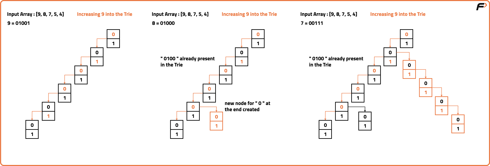
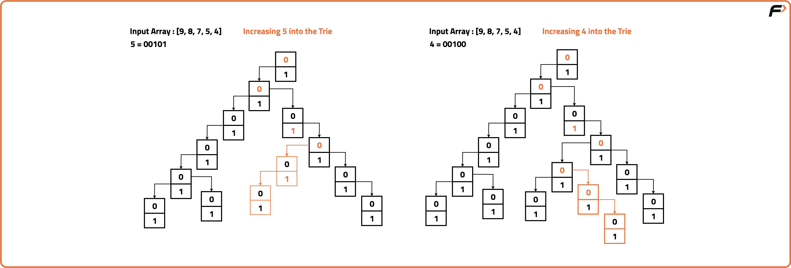
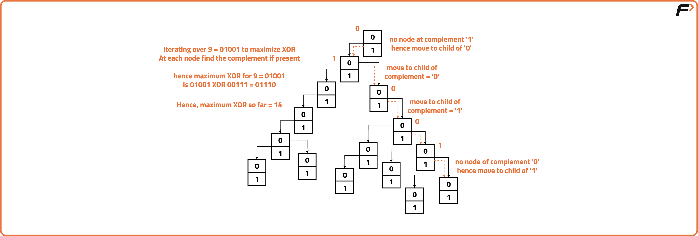

Maximum XOR of Two Numbers in an Array
Problem Statement:
Given an integer array nums, return the maximum result of nums[i] XOR nums[j], where 0 <= i <= j < n.
Examples
Input: nums = [3, 9, 10, 5, 1]
Output: 15
Explanation:
The maximum XOR value is 10 XOR 5 = 15.
Input: nums = [26, 49, 30, 15, 69]
Output: 116
Explanation:
The maximum XOR value is 69 XOR 49 = 116.
Approach
Algorithm
XOR, or exclusive OR, is a binary bitwise operation that returns true (1) only when the operands differ. If the bits are the same, the result is 0. If the bits are different, the result is 1.
The goal is to maximise the XOR result between two numbers This is achieved by ensuring for each bit position, the XOR result is maximum hence we want to maximise the number of opposite bits between the numbers.
To do this efficiently, we use a Trie which allows us to iterate through each bit of the numbers in the array and maximise XOR value by selecting the opposite bit when available hence ensuring the highest possible XOR result.
The goal is to maximise the XOR result between two numbers This is achieved by ensuring for each bit position, the XOR result is maximum hence we want to maximise the number of opposite bits between the numbers.
To do this efficiently, we use a Trie which allows us to iterate through each bit of the numbers in the array and maximise XOR value by selecting the opposite bit when available hence ensuring the highest possible XOR result.
- Create a Trie Node Structure. This structure represents a node in the Trie and contains an array to store links to child nodes (0 and 1). It also provides methods to interact with the child nodes like ‘containsKey’, ‘get’ and ‘put’.
- Iterate through the given array and insert its bit values into the Trie from left to right.
- Start from the root node and initialise the maximum XOR values as 0. Iterate through each bit of the number (from left to right) and check if the complement of the current bit exists in the Trie.
- If it exists, update the maximum XOR value with the current bit.Moves to the child node corresponding to the complement of the current bit.
- If the complement of the current bit doesn’t exist in the Trie, move to the child node corresponding to the current bit.



Code
#include <bits/stdc++.h>
using namespace std;
// Node structure for Trie
class Node {
public:
Node* links[2];
// Check if bit path exists
bool containsKey(int bit) {
return links[bit] != NULL;
}
// Get the child node for bit
Node* get(int bit) {
return links[bit];
}
// Create a link for the bit
void put(int bit, Node* node) {
links[bit] = node;
}
};
class Solution {
public:
Node* root;
// Initialize root node
Solution() {
root = new Node();
}
// Insert a number into the Trie
void insert(int num) {
Node* node = root;
for (int i = 31; i >= 0; i--) {
// Get the i-th bit
int bit = (num >> i) & 1;
// Create path if it doesn't exist
if (!node->containsKey(bit)) {
node->put(bit, new Node());
}
// Move to next node
node = node->get(bit);
}
}
// Get max XOR for a given number
int getMaxXOR(int num) {
Node* node = root;
int maxXor = 0;
for (int i = 31; i >= 0; i--) {
// Get the i-th bit
int bit = (num >> i) & 1;
// Try to go opposite bit to maximize XOR
if (node->containsKey(1 - bit)) {
maxXor |= (1 << i);
node = node->get(1 - bit);
} else {
node = node->get(bit);
}
}
return maxXor;
}
// Find the maximum XOR among all pairs
int findMaximumXOR(vector<int>& nums) {
for (int num : nums) {
insert(num);
}
int maxResult = 0;
for (int num : nums) {
maxResult = max(maxResult, getMaxXOR(num));
}
return maxResult;
}
};
// Driver code
int main() {
vector<int> nums = {3, 10, 5, 25, 2, 8};
Solution sol;
cout << sol.findMaximumXOR(nums) << endl;
return 0;
}
Complexity Analysis
Time Complexity: O(N), each number is inserted and queried in the Trie in constant time (32 bits).Space Complexity: O(N), Trie stores up to 32 bits for each number, resulting in linear space in worst case.